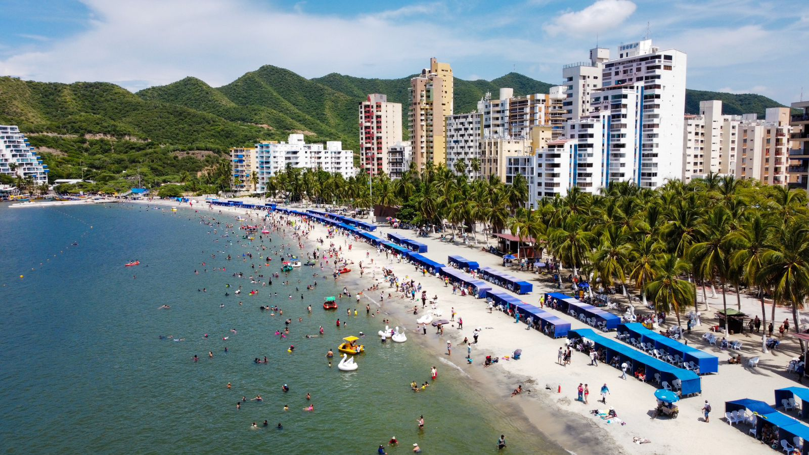
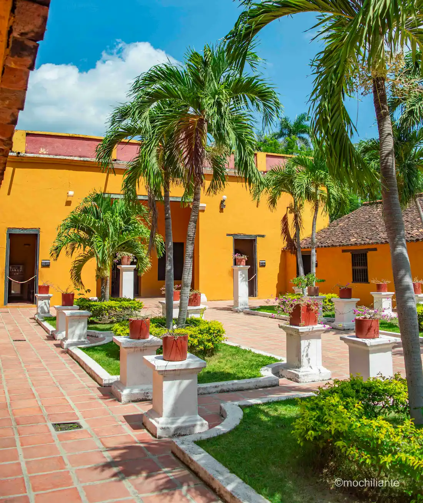
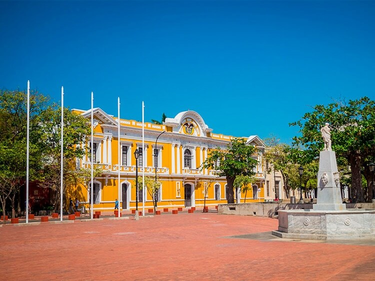

Descubre Santa Marta
Santa Marta es una de las ciudades más antiguas de América y un tesoro del Caribe colombiano. Rodeada por la Sierra Nevada y bañada por el mar, ofrece playas paradisíacas, naturaleza y cultura.
Con A&G TOURS podrás visitar el Parque Tayrona, el centro histórico y disfrutar de la tranquilidad de sus playas. Además, te brindamos transporte seguro para recorrer todos sus atractivos turísticos.
Entre sus principales lugares están El Rodadero, la Quinta de San Pedro Alejandrino y las bahías cristalinas de Tayrona.
Lugares imperdibles en Santa Marta


